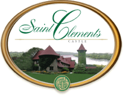

The Bride and Groom
LAURA
Laura was born at St. Vincent Hospital in Worcester, MA. She attended Pincushion Montessori School in Ashland, MA until third grade, after which she switched into Hopkinton's public schools. Between doodling on her homework and playing violin in Hopkinton Middle and High School's orchestras and pit band, she also found time to volunteer at Milford Regional Hospital and practice karate at Next Generation Martial Arts in Holliston, MA. Upon graduation, Laura continued her studies at Rensselaer Polytechnic Institute in Troy, NY, majoring in Computer Science. While studying at RPI, Laura participated in computer security competitions with RPISEC, the school's computer security team. Laura graduated from RPI this past Spring, and will be moving on to a career as a software engineer.
MIKE
 Born at Hartford Hospital in Hartford, CT, Mike was the first of his parents' two children. For his first four years, the family lived in Avon, but they moved to South Windsor when his sister Jackie was born. Mike attended elementary and middle schools in South Windsor, as well as South Windsor High School. There, his interests in music and technology collided and sparked his passion for music production. After taking on leadership positions in SWHS's band program, performing with his band Phoenix Down and recording lots of music projects, he graduated and began his studies at the UMASS Lowell with a focus on Sound Recording Technology. While living and working in Lowell, Mike performed with ensembles, made lots of recording projects and supervised the school's studios. He then moved on to a variety of jobs, settling on teaching technology courses at High Schools in Hopkinton and Natick, MA.
Born at Hartford Hospital in Hartford, CT, Mike was the first of his parents' two children. For his first four years, the family lived in Avon, but they moved to South Windsor when his sister Jackie was born. Mike attended elementary and middle schools in South Windsor, as well as South Windsor High School. There, his interests in music and technology collided and sparked his passion for music production. After taking on leadership positions in SWHS's band program, performing with his band Phoenix Down and recording lots of music projects, he graduated and began his studies at the UMASS Lowell with a focus on Sound Recording Technology. While living and working in Lowell, Mike performed with ensembles, made lots of recording projects and supervised the school's studios. He then moved on to a variety of jobs, settling on teaching technology courses at High Schools in Hopkinton and Natick, MA.
HOW WE MET
In Spring of 2010, Mike was 23, teaching for his first year at Hopkinton High School, where Laura was a senior. Because she enjoyed logic puzzles, Laura enrolled in a Java Programming course, which Mike taught. They each went their own way after that year; Laura to RPI and Mike to Natick High, but kept in touch, conversing about computer science topics. Eventually their correspondence grew into talking about other topics, playing online games together and even meeting up in person. Once that happened, sparks flew, and they knew that they were right for each other.
THE ENGAGEMENT
Mike and Laura spent the summer of 2013 living in Santa Clara, CA. She interned as a software engineer at Apple, while he worked toward his Masters degree. Unbeknownst to Laura, however, Mike had a second task at hand. At the very beginning of the summer, while Laura was starting her internship in California, Mike was still in Massachusetts finishing up the school year. He took advantage of his time alone to plan and prepare for a proposal she'd never forget. A few weeks before he was set to leave for California, Mike travelled to New York City and put together the perfect ring for Laura. What followed was several nerve-wracking weeks of transporting and concealing it, along with his exciting plans for a proposal. Finally, the big day came: under the guise of a birthday celebration, a limousine carried Mike and Laura to the Hagiwara Japanese Tea Garden in Golden Gate Park. They walked around for a while, taking pictures and marveling at the beautiful architecture, vibrant plants and exotic koi fish. Eventually they sat down to take a break on a secluded bench in a shady grove, and it was then that Mike surprised Laura with her ring and asked her to marry him. Ecstatic, she said yes, and they celebrated with dinner at Chapeau!, a fantastic french restaurant in San Francisco's Richmond District.
Wedding
CEREMONY
Saint Clements Castle
1931 Portland-Cobalt Road
Portland, Connecticut
Saturday, April 25th, 2015
7:00 PM on the River
*Reception to follow

SCHEDULE OF EVENTS
Rehearsal Dinner
Thursday, September 5th at 8pm
Ceremony
Saturday, April 25th at 7pm (reception to follow)
BRIDAL PARTY
Bridesmaids
Julie Collins
Gisele Solis
Jackie Lipson
MAIDS OF HONOR
Nicole Lamb
Trish Vosburg
Groomsmen
Brian Wong
Brian Lam
David Crepeault
Ben Marshalkowski
Stephen Babcock
BEST MAN
Michael Fazio
Accomodations
HOTELS
Courtyard Mariott, Hartford Cromwell
4 Sebethe Dr
Cromwell, CT 06416
(860) 635-1001
$PRICE
Directions to St. Clement's Castle, Portland
From Hartford (about 25 minutes)
Take I-91 S to Rte 9 (exit 22S) in Cromwell. Follow Rte 9 S. into Middletown. In Middletown, take Rte 66 E. (exit16) over the Arrigoni Bridge into Portland. Continue to follow Rte 66 E. approximately 4.5 miles from the bridge. The entrance to Saint Clements Castle is on the right side of Rte 66.
or
Take Rte 2 E. to Exit 7 (Rte 17 Portland). Follow Rte 17 to the end (approx 10 miles). At the end, turn left onto Rte 66 E. Follow Rte 66 E. for 2 miles. Saint Clements Castle is on the right side.
From Massachusetts (from Boston, about 2 hours)
Take I-84 W., or I-91 S. to Hartford. In Hartford, take I-91 S. and follow the directions above from Hartford.
From New York City (about 2 hours)
Take the Hutchinson River Pkwy N. to the Merritt Parkway N. (Rte 15). In Meriden, Connecticut, Follow I-91 N. to Rte 9 (exit 22S) S. into Middletown. In Middletown, take Rte 66 E. (exit16) over the Arrigoni Bridge into Portland. Continue to follow Rte 66 E. approx 4.5 miles from the bridge. The entrance to Saint Clements Castle is on the right side of Rte 66.
From New York State (from Danbury,about 1 hour)
Take I-84 E. to Rte 691. In Meriden, Connecticut, follow I-91 N. to Rte 9 (exit 22S) into Middletown. In Middletown, take Rte 66 E. (exit16) over the Arrigoni Bridge into Portland. Continue to follow Rte 66 E. approx 4.5 miles from the bridge. The entrance to Saint Clements Castle is on the right side of Rte 66.
VICINITY MAP
HISTORY OF THE CASTLE
The architectural design of Saint Clements began with the 16th century castles of Europe. Centuries later, a New York architect named Sidney Algernon Bell incorporated several interesting features in the manor house, which include the long balcony modeled after the Inn of William the Conqueror at Divers, France, and the Art Gallery which was modeled after the Great Hall of the Chateau of Langeais. The two Norman towers add a distinctive feature to the French Tudor entrance.
The 17th century saw the rapid growth of the Connecticut River towns. In the Middletown area, the Taylor family settled to become farmers, ministers and barristers. Many years later, Howard Taylor, while working as a Solicitor, secured a large sum of money and, together with his wife Gertrude, proceeded and began building the now historic Saint Clements Castle in 1898.
Granite blocks for the walls were brought to the site by oxen. The wood is chestnut and oak, which were plentiful and nearly indestructible. The actual construction of the Castle was handled by workmen from the Middletown/ Portland area. Many were Italian and Irish immigrants who walked to work each day. Evidence of their careful craftsmanship is still visible in the woodwork and masonry. Notice, especially, the towers and exterior garden wall.
THE SAINT CLEMENTS FOUNDATION
In 1993, the historic Saint Clements Castle was gifted to the Saint Clements Foundation, Inc., a non-profit organization formulated for the preservation of the Castle, its gardens and art treasures. The Trustees began a detailed restoration of the gables, walkways, balconies and the courtyards.
The Trustees love for art, antiques and historical appreciation is now evident in the Art Gallery and throughout the Estate.
Saint Clements Estate and Marina with over a mile of riverfront is now preserved for future generations.
From its inception, the Foundation has supported charities and education for Homeless, Health and Hospice Care, and Children.
Registry
You can find our registry in-store Create & Barrel, as well as on their website. I THINK
LOVE NOTES FOR LAURA & MIKE
Email us at themikelipson(at)gmail.com